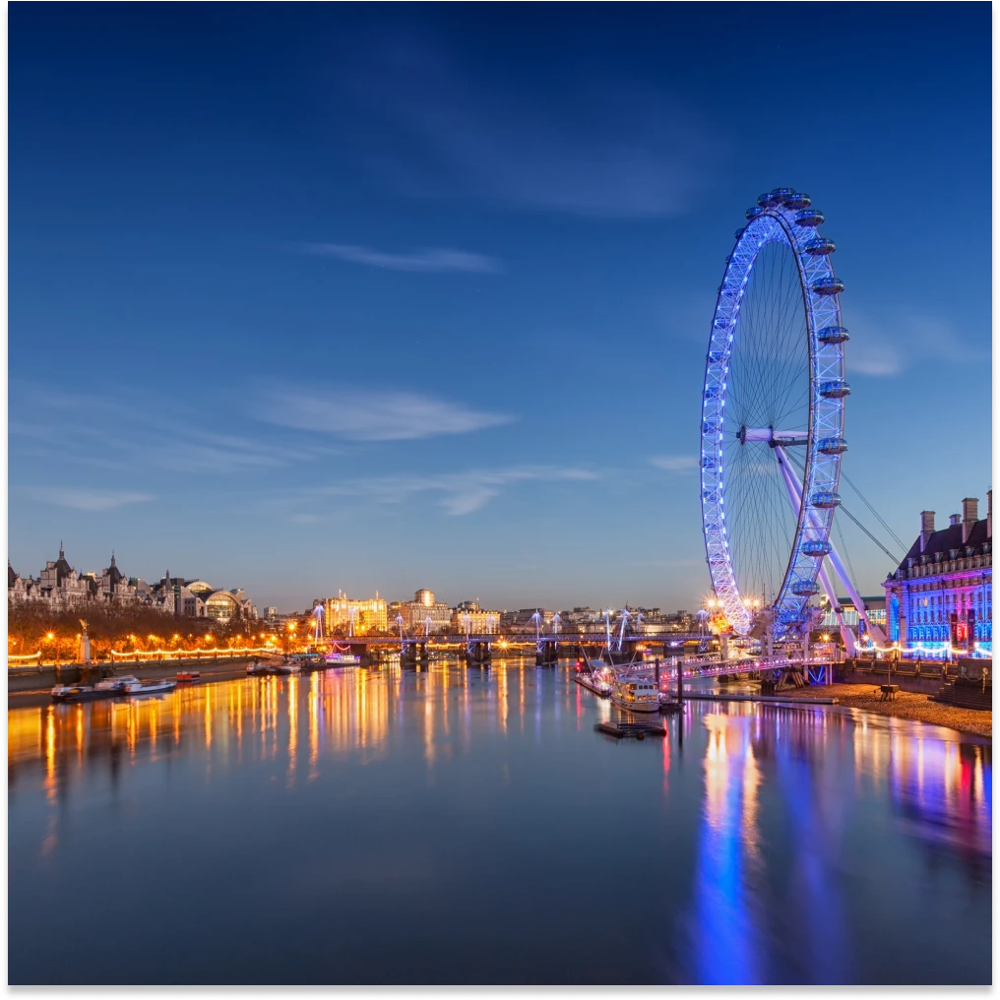

London, United Kingdom
The London Eye
Opposite the Houses of Parliament, on the South Bank of the River Thames, stands the London Eye. With its panoramic views, the London Eye is currently Europe's tallest observation wheel and the single most visited attraction in the United Kingdom.
Grant Leisure was commissioned by British Airways to provide a feasibility analysis, corporate hospitality and sponsorship program, and operating strategy, and additionally managed both the tender process and selection of an operator. Following the London Eye's success, observation wheels have significantly grown in popularity, many of which are modeled after their predecessor.